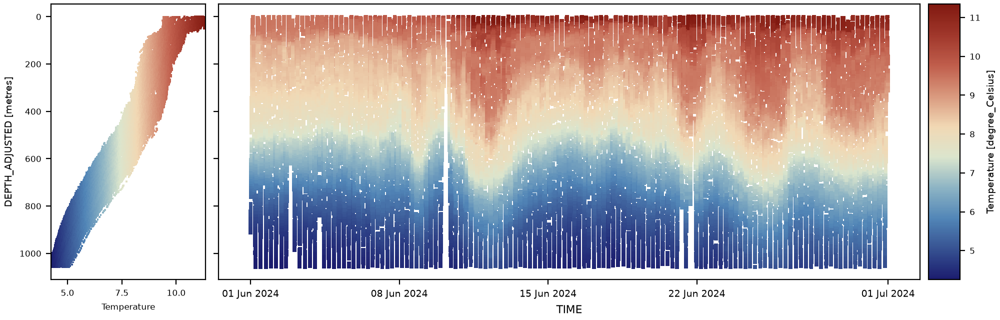

Temperature Processing#


Overview#
Temperature is measured by onboard CTD payload as a glider profiles. The temperature-measuring component is typically a high-accuracy thermistor which has variable resistance under changing thermal environment. The resistance change is predictable, following a curve which can be used to infer the current temperature of the component. Temperature measurements are often some of the most reliable, requiring minimal processing.
When using pelagos-py, we recommend implementing the following quality control (QC) workflow:
Initial quality control
Global range test — Flags generally unphysical values
Local range test — Flags regionally specific unphysical values
Stuck value test — Flags sections or repeated identical values
Spike test — Flags outliers what deviated significantly from time-dependent trends
Derivation of conservative temperature — Conversions from in situ temperature to conservative temperature as defined by TEOS-10
Typically temperature variables require no additional correction unless there is a serious fault with the sensor. If this occurs, manual correction may be required.
Each processing stage is described in detail below, including default pelagos-py configuration examples.
1. Initial quality control#
Temperature QC is performed using general Range QC, Stuck Value QC and Spike QC steps used elsewhere in pelagos-py (see the Quality Control documentation for the full algorithm descriptions). These QC steps have no code-level defaults of their own. Below we provide configurations for these steps that align with the [Argo CTD quality control manual](Argo Quality Control Manual for CTD and Trajectory Data). Temperature QC flags may also affected by other CTD QC as data quality may be affected by the quality of other CTD variables. These linked-variable QC methods are not covered here.
1.1 Global range test#
Recommended configuration for open ocean:
qc_settings:
range qc:
variable_ranges:
TEMP: # Name of temperature variable in .nc file
4: [-2.5, 40.0, outside] # Degrees Celcius
Temperature cannot fall below -2.5 °C as this is well below the freezing temperature of saline water (~1.9 °C). Temperatures above 40 °C would significantly exceed the hottest temperatures measured in the global ocean (36 °C in the Persian Gulf due to intense surface heating of shallow waters).
1.2 Local range test#
Local range test should only be applied in cases where a glider has been deployed to a region where conditions are sufficiently unique. This test tightens the ranges checked by the prior global range test.
Recommended configurations:
Red Sea
qc_settings:
range qc:
variable_ranges:
TEMP: # Name of temperature variable in .nc file
4: [21, 40.0, outside] # Degrees Celcius
Mediterranean Sea
qc_settings:
range qc:
variable_ranges:
TEMP: # Name of temperature variable in .nc file
4: [10, 40.0, outside] # Degrees Celcius
The ranges specified above pertain to the lower and upper limits of temperatures measured in the respective regions
1.3 Stuck value test#
Recommended configuration:
qc_settings:
stuck value qc:
variables:
TEMP: 3 # Four or more equal values in a row
A frozen reading (four or more identical consecutive values) indicates a potential sensor error. All involved values are flagged as bad (4).
1.4 Spike test#
The spike test step looks for unphysical spiking in temperature readings. A suit of approaches are currently being tested and the default spike test has yet to be implemented.
2. Deriving conservative temperature#
Seawater’s temperature changes not just from heating/cooling but also from pressure changes (compression) and mixing effects tied to its salt content. In-situ temperature reflects all of this, which makes it a poor stand-in for actual heat content — a parcel can change in-situ temperature without gaining or losing any heat, just by moving to a different depth.
Potential temperature (adjusting for pressure effects) improves on this, but it still isn’t perfectly conserved when water parcels mix, because seawater’s heat capacity depends on salinity.
Conservative Temperature fixes this by being based on enthalpy — essentially the total heat energy contained in a parcel of seawater, accounting for both its temperature and the energy tied up in its pressure and volume. Because enthalpy is the quantity that heat budgets are actually built on, using it as the basis for temperature means Conservative Temperature stays almost perfectly consistent with the true heat content of the water, even through mixing.
In short: converting to Conservative Temperature gives us a temperature-like variable that we can treat as a reliable tracer of heat, which is essential for accurate ocean heat budget and heat transport calculations.
Recommended configuration:
- name: "Derive CTD"
parameters:
to_derive: [
# PSAL,
# ASAL,
CONS_TEMP # Conservative temperature
]
pelagos-py implements the conservative temperature conversion using GSW-python which requires the input variables:
Absolute salinity (ASAL)
Temperature (TEMP)
Pressure (PRES) These must be present in the dataset under their variable names shown in brackets. Absolute salinity is not typically present in raw datasets. We therefore provide its derivation through the same Derive CTD step. Uncomment the “PSAL” and “ASAL” lines to allow this (ASAL requires PSAL). Inputs are read from their
_ADJUSTEDversions where they exist.
References#
Wong Annie, Keeley Robert, Carval Thierry, Argo Data Management Team (2025). Argo Quality Control Manual for CTD and Trajectory Data. Ifremer. https://doi.org/10.13155/33951
IOC, SCOR, and IAPSO (2010), The International Thermodynamic Equation of Seawater – 2010: Calculation and Use of Thermodynamic Properties, Intergovernmental Oceanographic Commission, Manuals and Guides No. 56, 196 pp., UNESCO, Paris. Available from http://www.TEOS-10.org